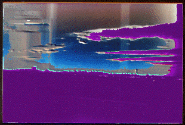

THE WORLD IS ANILLUSION made up of Chicago, London, LA, NY, and a hundred other falsemetropolises (themselves mini conglomerations of the same lies perpetratedby the World) to distract you from your village or hamlet, where the onlyhuman interaction actually takes place. The television, as chief agentof the World illusion, provides false concepts of World-over spatialitythat coerces the viewer into thinking it's possible to go from New Yorkto Tokyo in time it takes to say back to our correspondent inJapan, and so your BBC Worldwide and other outlandish exagerrationsperpetrated on you, the viewership, serve only to atomize theformerly-predominant regional identity and replace it with a untenableglobal consciousness, not a transcendence which can ever be consummated,only an addiction perpetuated by the consumption of more television.